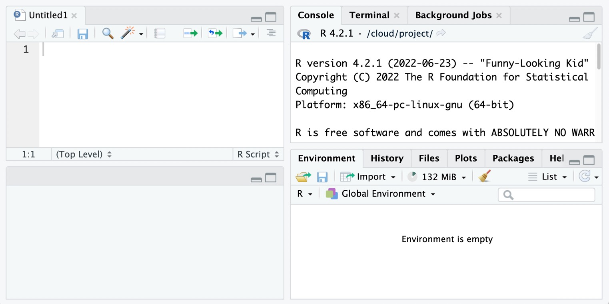
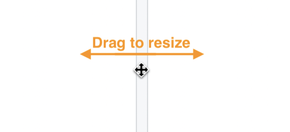
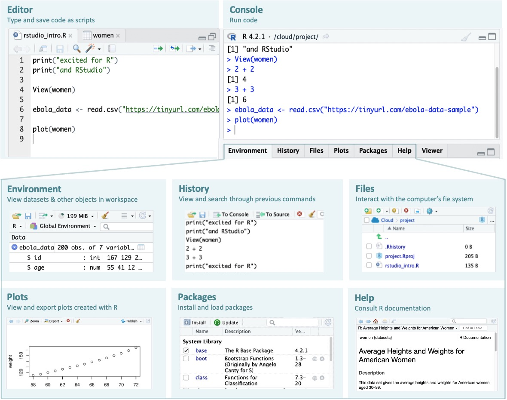
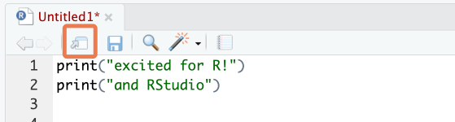
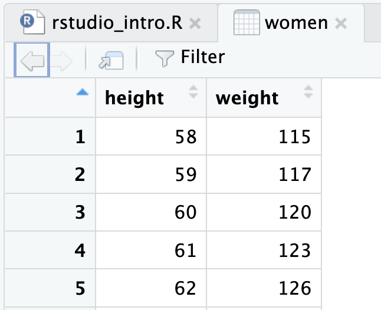
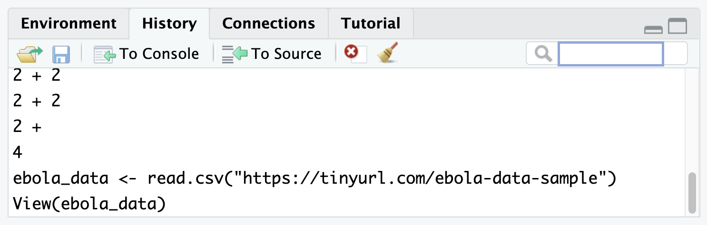
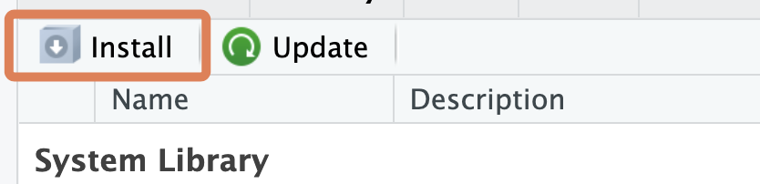
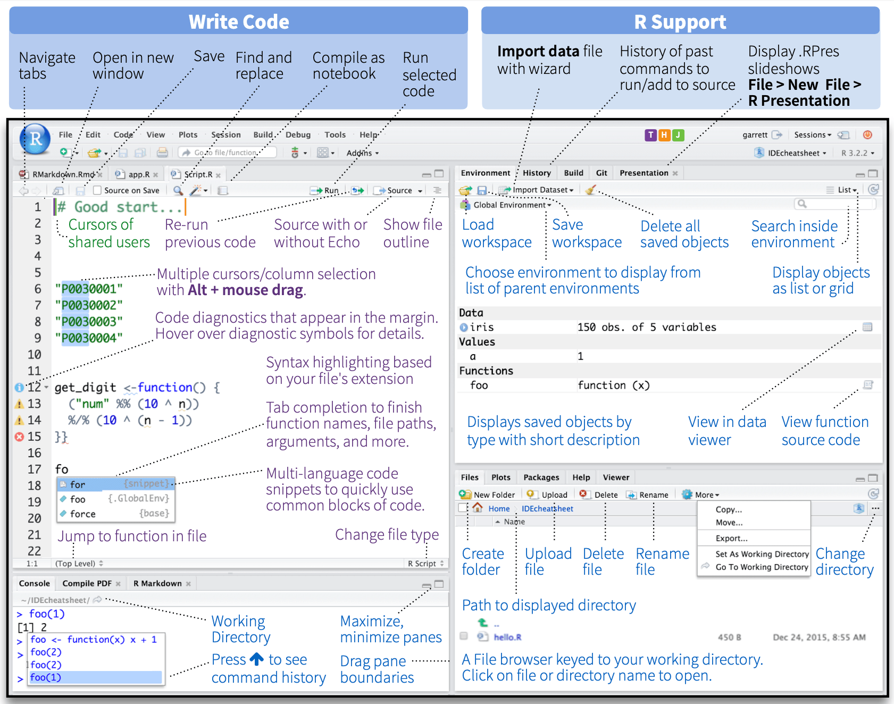

print("excited for R!")2 Using RStudio
2.1 Learning objectives
You can identify and use the following tabs in RStudio: Source, Console, Environment, History, Files, Plots, Packages, Help and Viewer.
You can modify RStudio’s interface options to suit your needs.
2.2 Introduction
Now that you have access to R & RStudio, let’s go on a quick tour of the RStudio interface, your digital home for a long time to come.
We will cover a lot of territory quickly. Do not panic. You are not expected to remember it all this. Rather, you will see these topics again and again throughout the course, and you will naturally assimilate them that way.
You can also refer back to this lesson as you progress.
The goal here is simply to make you aware of the tools at your disposal within RStudio.
To get started, you need to open the RStudio application:
If you are working with RStudio Cloud, go to rstudio.cloud, log in, then click on the “r_intro” project that you created in the last lesson. (If you do not see this, simply create a new R project using the “New Project” icon at the top right).
If you are working on your local computer, go to your applications folder and double click on the RStudio icon. Or you search for this application from your Start Menu (Windows), or through Spotlight (Mac).
2.3 The RStudio panes
By default, RStudio is arranged into four window panes.
If you only see three panes, open a new script with File > New File > R Script . This should reveal one more pane.

Before we go any further, we will rearrange these panes to improve the usability of the interface.
To do this, in the RStudio menu at the top of the screen, select Tools > Global Options to bring up RStudio’s options. Then under Pane Layout, adjust the pane arrangement. The arrangement we recommend is shown below.

At the top left pane is the Source tab, and at the top right pane, you should have the Console tab.
Then at the bottom left pane, no tab options should checked—this section should be left empty, with the drop-down saying just “TabSet”.
Finally, at the bottom right pane, you should check the following tabs: Environment, History, Files, Plots, Packages, Help and Viewer.
Great, now you should have an RStudio window that looks something like this:

The top-left pane is where you will do most of the coding. Make this larger by clicking on its maximize icon:

Note that you can drag the bar that separates the window panes to resize them.

Now let’s look at each of the RStudio tabs one by one. Below is a summary image of what we will discuss:

2.3.1 Source/Editor

The source or editor is where your R “scripts” go. A script is a text document where you write and save code.
Because this is where you will do most of your coding, it is important that you have a lot of visual space. That is why we rearranged the RStudio pane layout above—to give the Editor more space.
Now let’s see how to use this Editor.
First, open a new script under the File menu if one is not yet open: File > New File > R Script. In the script, type the following:
To run code, place your cursor anywhere in the code, then hit Command + Enter on macOS, or Control + Enter on Windows.
This should send the code to the Console and run it.
You can also run multiple lines at once. To try this, add a second line to your script, so that it now reads:
print("excited for R!")
print("and RStudio!")Now drag your cursor to highlight both lines and press Command/Control + Enter.
To run the entire script, you can use Command/Control + A to select all code, then press Command/Control + Enter. Try this now. Deselect your code, then try to the shortcut to select all.
Side Note
There is also a ‘Run’ button at the top right of the source panel (  ), with which you can run code (either the current line, or all highlighted code). But you should try to use the keyboard shortcut instead.
), with which you can run code (either the current line, or all highlighted code). But you should try to use the keyboard shortcut instead.
To open the script in a new window, click on the third icon in the toolbar directly above the script.

To put the window back, click on the same button on the now-external window.
Next, save the script. Hit Command/Control + S to bring up the Save dialog box. Give it a file name like “rstudio_intro”.
If you are working with RStudio cloud, the file will be saved in your project folder.
If you are working on your local computer, save the file in an easy-to-locate part of your computer, perhaps your desktop. (Later on we will think about the “proper” way to organize and store scripts).
You can view data frames (which are like spreadsheets in R) in the same pane. To observe this, type and run the code below on a new line in your script:
View(women)Notice the uppercase “V” in View().

women is the name of a dataset that comes loaded with R. It gives the average heights and weights for American women aged 30–39.
You can click on the “x” icon to the right of the “women” tab to close this data viewer.
2.3.2 Console
The console, at the bottom left, is where code is executed. You can type code directly here, but it will not be saved.
Type a random piece of code (maybe a calculation like 3 + 3) and press ‘Enter’.

If you place your cursor on the last line of the console, and you press the up arrow, you can go back to the last code that was run. Keep pressing it to cycle to the previous lines.
To run any of these previous lines, press Enter.
2.3.3 Environment

At the top right of the RStudio Window, you should see the Environment tab.
The Environment tab shows datasets and other objects that are loaded into R’s working memory, or “workspace”.
To explore this tab, let’s import a dataset into your environment from the web. Type the code below into your script and run it:
ebola_data <- read.csv("https://tinyurl.com/ebola-data-sample")
Side Note
You don’t need to understand exactly what the code above is doing for now. We just want to quickly show you the basic features of the Environment pane; we’ll look at data importing in detail later.
Also, if you do not have active internet access, the code above will not run. You can skip this section and move to the “History” tab.
You have now imported the dataset and stored it in an object named ebola_data. (You could have named the object anything you want.)
Now that the dataset is stored by R, you should be able to see it in the Environment pane. If you click on the blue drop-down icon beside the object’s name in the Environment tab to reveal a summary.

Try clicking directly on the ebola_data dataset from the Environment tab. This opens it in a ‘View’ tab.
You can remove an object from the workspace with the rm() function. Type and run the following in a new line on your R script.
rm(ebola_data)Notice that the ebola_data object no longer shows up in your environment after having run that code.
The broom icon, at the top of the Environment pane can also be used to clear your workspace.

To practice using it, try re-running the line above that imports the Ebola dataset, then clear the object using the broom icon.
2.3.4 History
Next, the History tab shows previous commands you have run.

You can click a line to highlight it, then send it to the console or to your script with the “To Console” and “To Source” icons at the top of this tab.
To select multiple lines, use the “Shift-click” method: click the first item you want to select, then hold down the “Shift” key and click the last item you want to select.
Finally, notice that there is a search bar at the top right of the History pane where you can search for past commands that you have run.
2.3.5 Files
Next, the Files tab. This shows the files and folders in the folder you are working in.

The tab allows you to interact with your computer’s file system.
Try playing with some of the buttons here, to see what they do. You should try at least the following:
Make a new folder
Delete that folder
Make a new R Script
Rename that script
2.3.6 Plots
Next, the Plots tab. This is where figures that are generated by R will show up. Try creating a simple plot with the following code:
plot(women)
That code creates a plot of the two variables in the women dataset. You should see this figure in the Plots tab.
Now, test out the buttons at the top of this tab to explore what they do. In particular, try to export a plot to your computer.
2.3.7 Packages
Next, let’s look at the Packages tab.

Packages are collections of R code that extend the functionality of R. We will discuss packages in detail in a future lesson.
For now, it is important to know that to use a package, you need to install then load it. Packages need to be installed only once, but must be loaded in each new R session.
All the package names you see (in blue font) are packages that are installed on your system. And packages with a checkmark are packages which are loaded in the current session.
You can install a package with the Install button of the Packages tab.

But it is better to install and load packages with R code, rather than the Install button. Let’s try this. Type and run the code below to install the {highcharter} package.
install.packages("highcharter")
library(highcharter)The first line installs the package. The second line loads the package from your package library.
Because you only need to install a package once, you can now remove the installation line from your script.
Now that the {highcharter} package has been installed and loaded, you can use the functions that come in the package. To try this, type and run the code below:
highcharter::hchart(women$weight)Registered S3 method overwritten by 'quantmod':
method from
as.zoo.data.frame zoo This code uses the hchart() function from the {highcharter} package to plot an interactive histogram showing the distribution of weights in the women dataset.
(Of course, you may not yet know what a function is. We’ll get to this soon.)
2.3.8 Viewer
Notice that the histogram above shows up in a Viewer tab. This tab allows you to preview HTML files and interactive objects.
2.3.9 Help
Lastly, the Help tab shows the documentation for different R objects. Try typing out and running each line below to see what this documentation looks like.
?hchart
?women
?read.csv
Help files are not always very easy to understand for beginners, but with time they will become more useful.
2.4 RStudio options
RStudio has a number of useful options for changing it’s look and functionality. Let’s try these. You may not understand all the changes made for now. That’s fine.
In the RStudio menu at the top of the screen, select Tools > Global Options to bring up RStudio’s options.
Now, under
Appearance, choose your ideal theme. (We like the “Crimson Editor” and “Tomorrow Night” themes.)
Under
Code > Display, check “Highlight R function calls”. What this does is give your R functions a unique color, improving readability. You will understand this later.Also under
Code > Display, check “Rainbow parentheses”. What this does is make your “nested parentheses” easier to read by giving each pair a unique color.


Finally under
General > Basic, uncheck the box that says “Restore .RData into workspace at startup”. You don’t want to restore any data to your workspace (or environment) when you start RStudio. Starting with a clean workspace each time is less likely to lead to errors.This also means that you never want to “save your workspace to .RData on exit”, so set this to Never.
2.5 Command palette
The Rstudio command palette gives instant, searchable access to many of the RStudio menu options and settings that we have seen so far.
The palette can be invoked with the keyboard shortcut Ctrl + Shift + P (Cmd + Shift + P on macOS).
It’s also available on the Tools menu (Tools -> Show Command Palette).

Try using it to:
Create a new script (Search “new script” and click on the relevant option)
Rename a script (Search “rename” and click on the relevant option)
2.6 Wrapping up
Congratulations! You are now a new citizen of RStudio.
Of course, you have only scratched the surface of RStudio functionality. As you advance in your R journey, you will discover new features, and you will hopefully grow to love the wonderful integrated development environment (IDE) that is RStudio. One good place to start is the official RStudio IDE cheatsheet.
Below is one section of that sheet:

See you in the next lesson!
2.7 Further resources

KENE DAVID NWOSU
Passionate about world improvement

2.8 References
Some material in this lesson was adapted from the following sources:
- “Rstudio Cheatsheets.” RStudio, https://www.rstudio.com/resources/cheatsheets/.
- “Chapter 1 Getting Started: Data Skills for Reproducible Research.” Chapter 1 Getting Started | Data Skills for Reproducible Research, https://psyteachr.github.io/reprores-v2/intro.html.
This work is licensed under the Creative Commons Attribution Share Alike license.